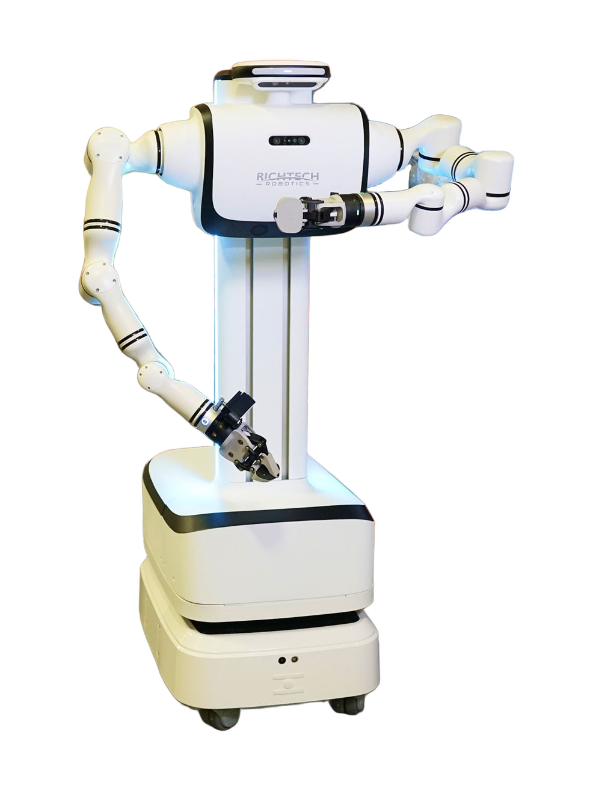

Dex
A wheeled humanoid robot from the United States.
Sources retrieved: 28 September 2026 (A, B)
- Applications
- Intended use, per the manufacturer
- Dex is designed to be deployed for light or medium industrial tasks, including machine operation for manufacturing, part sorting and material handling, and quality inspection and packaging. These core capabilities make Dex an immediate productivity partner in manufacturing, logistics, and other labor-intensive sectors.Source and note: Intended use, per the manufacturerB richtechrobotics.com/resources/dex-at-gtc-dc · Retrieved 28 September 2026
- Indicative price
- Not stated

Manufacturer's own photo.
Specifications
8/32 specifications disclosed 24 not stated
24 fields hidden
How to read the figuresShow guideClose
- not statedNo source
- noStated by a source
- 0Reported as zero
- ASource
- A*Source with a caveat (select it)
- CERecords only what the manufacturer states regarding CE marking.
Select a source marker for source details and notes.
Physical2/13 disclosed
Power2/5 disclosed
Sensing and autonomy4/6 disclosed
Payload and expansion0/3 disclosed
Commercial0/1 disclosed
Compliance & certifications0/4 disclosed
Against the field
Each strip holds every robot of this type in the guide that states the figure, one bar per group of values. Further right means a larger figure, not a better robot. A taller bar means more robots in that group.
Height
137cm54inThe manufacturer’s own imperial figure.
109 wheeled humanoids state a height
76 state a higher figure, 7 a lower one. 22 state a range that includes this figure. 3 state only a bound (≥ or ≤) and are not ranked.
Runtime
240minNote: load condition not stated
106 wheeled humanoids state a runtime
41 state a higher figure, 7 a lower one. 13 more state exactly the same figure. 13 state a range that includes this figure. 31 state only a bound (≥ or ≤) and are not ranked.
Notes
Richtech Robotics' own Dex page describes two configurations, “mobile” (wheeled, battery-powered) and “stationary” (plugged in, continuous power, used as a fixed workstation like the company's ADAM robot). This is the mobile, wheeled configuration.
Height (“4'6\” (mobile), 3'7\“ (stationary)”) and battery life (“4 hours (mobile), continuous power (stationary)”) both give two figures for the two configurations; the figures given are the mobile ones.
Richtech states 11 lb (5 kg) per arm; no whole-robot payload is given.
Richtech also states a floor-gap traverse of 1.5 in (3.8 cm) and ADA ramp compliance.
The page is explicitly pre-launch: “we'll send you detailed specs, roadmap updates, and demo opportunities as we get closer to launch.”
No weight, total degrees of freedom, speed, slope rating, IP rating, docking/self-charging, ROS2/SDK support, or certifications are stated anywhere on the producer's own site.
Sources
One line per source, not per figure: a source has one retrieval date.
- Arichtechrobotics.com/solutions/dexMain source. Retrieved 28 September 2026
- Brichtechrobotics.com/resources/dex-at-gtc-dcRetrieved 28 September 2026